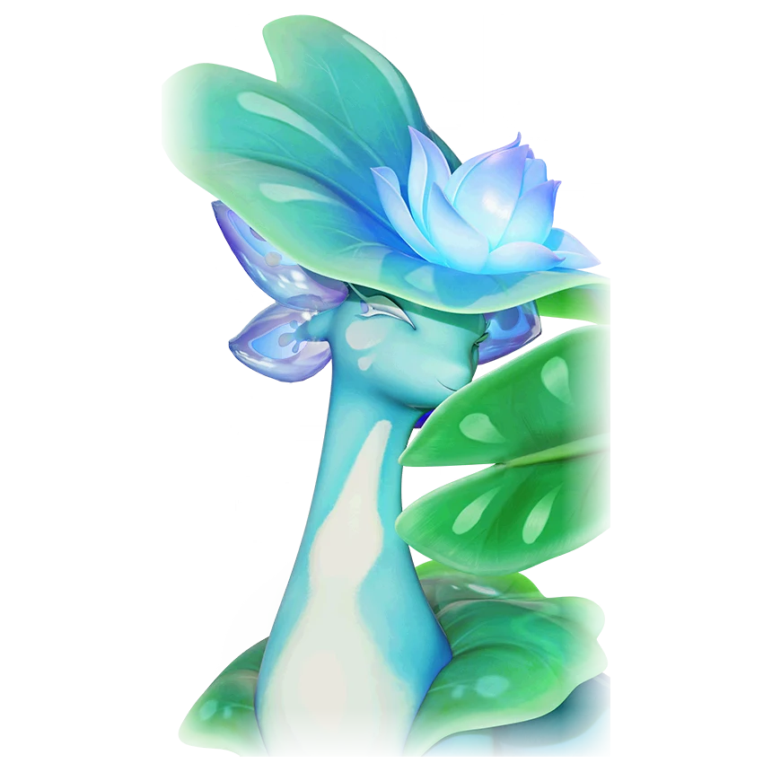

รายชื่อ Aniimo › #016

เจ้าใบบัว (Leafy)
#016ธาตุน้ำ / พืชNovaRegenTier B
พวกมันอาศัยอยู่ท่ามกลางดอกบัว และใช้หางใบบัวปกปิดใบหน้าเพื่อแสดงออกถึงความสง่างามของตน
ดูรายละเอียดเต็ม ร่างพิเศษ และร่างเปล่งประกายค่าสถานะพื้นฐาน
| HP | 120 |
|---|---|
| ATK | 95 |
| P.DEF | 82 |
| M.DEF | 82 |
| REGEN | 106 |
| BREAK | 50 |
สกิล
| โจมตีปกติ | ATK พืช ใช้พลังหญ้าโจมตีเป้าหมายจากระยะไกล |
| สกิล 1 | Vine Entanglement พืช ปล่อยการโจมตีเวทมนตร์เป็นวงกลมรอบเป้าหมาย หากเป้าหมายที่โดนโจมตีอยู่บนพื้นหญ้า จะถูกเถาวัลย์พันธนาการและเข้าสู่สถานะ [มึนงง] เป็นเวลา 3 วิ. |
| สกิล 2 | Vitality Blooms พืช สร้างสนามเวทวงกลมใต้เท้า ฟื้น 2.4 EP ทุกวินาทีให้เพื่อนธาตุพืชในระยะ (+0.24 ต่อ REGEN 100 สูงสุด 3.6) เป็นเวลา 12 วินาที สนามยังอัปเกรดพื้นหญ้า (Turf) รอบ ๆ เป็น Vitality Blooms ฟื้น HP 1% ทุกวินาทีให้เพื่อนธาตุพืชในระยะ |
| สกิล 3 | Cyclone of Leaves พืช สะบัดหางและปล่อยไซโคลนใบไม้พุ่งไปข้างหน้าเพื่อโจมตีเป้าหมาย พื้นหญ้าจะปรากฏขึ้นรอบแอนีโม และตลอดเส้นทางไซโคลนเป็นเวลา 20 วิ. |
| อัลติเมต | Lotus Bloom พืช ก่อรูปร่างรังไหมดอกบัวอย่างรวดเร็วแล้วระเบิดเปิดออก รักษาทั้งทีมทันทีเป็นจำนวน 15% ของ HP สูงสุดของผู้ร่ายสกิล และบูสต์ธาตุหญ้าให้กับทั้งทีม 15% เป็นเวลา 30 วิ. |
สายวิวัฒนาการ
- ปลาจอมหยอก → เจ้าใบบัว (แอนีโมเลเวล 20, ตั้งอยู่บนใบบัวยักษ์ซึ่งเป็นที่อยู่ของเจ้าใบบัวอัลฟา, เอาชนะเจ้าใบบัวอัลฟา)
จุดเกิด
- The Mistwoods Lv. 35–37
Held Item ที่แนะนำ
- Spirited Feather แอนีโมที่ติดตั้งจะได้รับพลังฟื้นฟูเพิ่ม 0.7 หน่วยต่อเลเวล
งานใน Homeland
งานธาตุน้ำ Lv.2, งานธาตุพืช Lv.3, ขนของ Lv.3